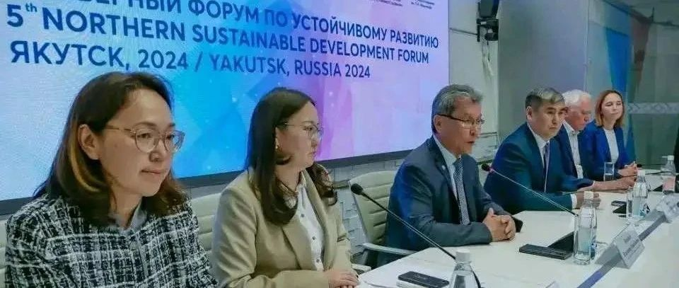

俄罗斯启动立法打击丁克主义
9月24日，俄罗斯国家议会主席沃洛金表示:俄罗斯议会开始审议一项打击丁克的法案。该法案提议禁止在媒体、互联网、电影和广告中展现、包容和支持“不生小孩思想”。
俄罗斯国家议会主席沃洛金指的是所谓的《俄罗斯对拒绝生育行为追究行政责任法》草案，该法案未明确何为“不生小孩思想”，外界担忧即使“向别人说自己不想生育小孩”也会被定义为是“宣传”丁克主义而被定罪。
俄罗斯国家议会主席沃洛金在社交媒体平台上表示：“根据该提案，宣传‘无子女主义’和‘无子女运动’的个人最高罚款可达40万卢布，公务员最高可达80万卢布，而法人则最高可达500万卢布。”
俄罗斯联邦委员会主席马特维延科在“圣彼得堡欧亚妇女论坛”上表示:“除非因为身体健康或宗教信仰因素，其他因素不生小孩的人是在为拒绝生育找寻借口。” “丁克主义是来自境外的反俄政治运动，想搞垮俄罗斯。”
据俄罗斯塔斯社报道，在俄罗斯使用媒体和互联网进行“无子女”思想宣传的外国公民，将受到拘留和驱逐出境处罚。
今年8月“圣彼得堡国际法律论坛”上，俄罗斯副司法部长谢沃洛德·武科洛夫称俄罗斯将准备反对与打击丁克主义，并将其形容为“恐怖主义”。
中国互联网平台上，一些亲俄政治博主配合宣传俄罗斯打击丁克主义的立法行为，声称“打击不生育思想”有许多“好处”。